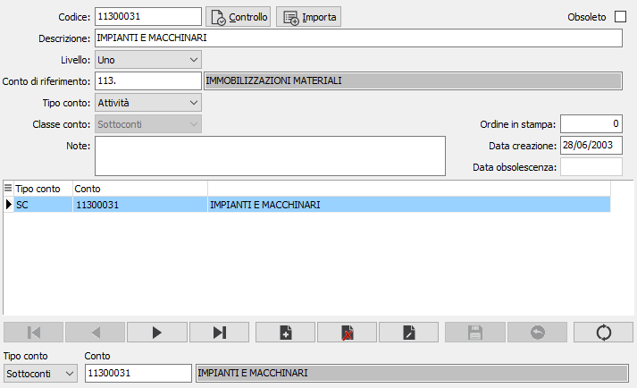
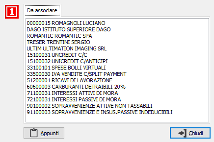

Il pulsante Importa consente di generare il piano dei conti importando il piano dei conti di OS1. Il pulsante è visibile solo se è configurato di utilizzare il piano dei conti di OS1.
Il pulsante Importa consente di generare il piano dei conti importando il piano dei conti di OS1. Il pulsante è visibile solo se è configurato di utilizzare il piano dei conti di OS1.Piano dei conti di riferimento
La procedura consente di definire un piano dei conti di riferimento a cui associare i conti presenti nel piano dei conti di OS1 oppure in piano dei conti generico (se previsto in configurazione).

CODICE: codice alfanumerico di 10 caratteri, a libera scelta dell’utente. Sul campo sono attive le funzioni di ricerca (F9) sulla tabella stessa.
DESCRIZIONE: campo alfanumerico di 50 caratteri per la descrizione del mastro.
LIVELLO: indica il livello di appartenenza del conto all'interno del piano dei conti.
CONTO DI RIFERIMENTO: indica il conto di appartenenza del conto corrente, dovrà avere un livello superiore a quello indicato nel campo precedente. Sul campo sono attive le funzioni di ricerca (F9) sulla tabella stessa.
TIPO CONTO: combo box per identificare la tipologia del conto. Valori possibili:
attività;
passività;
costi;
ricavi;
conti d'ordine attivi;
conti d’ordine passivi;
conti di servizio.
CLASSE CONTO: combo box per identificare la classe del conto. Valori possibili: sottoconti, clienti, fornitori.
NOTE: campo note su più righe per inserire eventuali annotazioni in merito all’utilizzazione del sottoconto.
ORDINE IN STAMPA: indica il numero d'ordine valido per l'ordinamento in fase di stampa.
DATA CREAZIONE: indica la data in cui il codice è stato caricato. Al momento del caricamento di un nuovo record in questo campo viene proposta la data di sistema.
DATA OBSOLESCENZA: indica la data in cui il codice è stato dichiarato obsoleto.
OBSOLETO: flag attivabile dall’utente per inibire il possibile utilizzo dell’elemento di tabella in esame nelle successive transazioni. Spuntando la casella sarà automaticamente assegnata alla data obsolescenza la data di sistema.
La sezione inferiore della maschera contiene i riferimenti al piano dei conti, quello di OS1 o quello aziendale in base a quanto configurato; nel caso in cui siano gestiti i clienti/fornitori sarà presente anche il tipo conto che consente di selezionare i vari sottoconti.
Il pulsante Importa consente di generare il piano dei conti importando il piano dei conti di OS1. Il pulsante è visibile solo se è configurato di utilizzare il piano dei conti di OS1.
Il pulsante Controllo consente di effettuare due tipi di controlli di coerenza selezionabili dal menù che compare alla pressione del pulsante.
Un controllo di coerenza tra il piano dei conti in uso, quello di OS1 oppure quello aziendale in base a come configurato, ed il piano dei conti di riferimento, segnalando i conti rimasti da associare. L'altro controllo è relativo alla coerenza con le voci di riclassificazione e vengono segnalati i conti di riferimento che non sono associati a nessuna voce di riclassificazione. La finestra seguente è un esempio di segnalazione derivante da un controllo coerenza con piano dei conti.
